// SCENE_01: 穿越
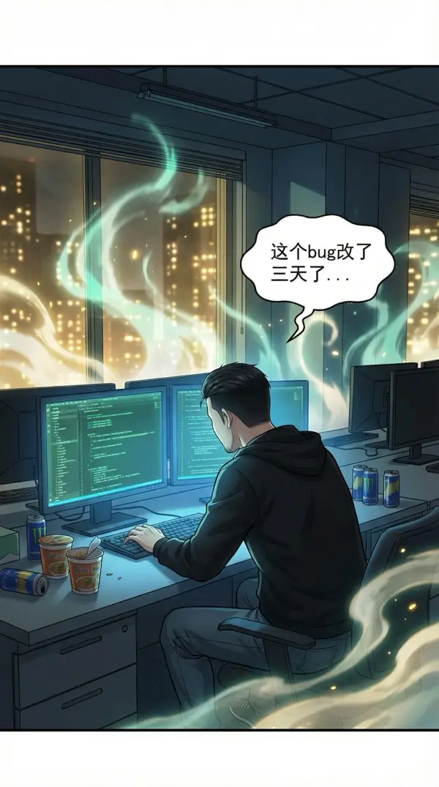
凌晨三点，办公室只剩我一个人。屏幕上的代码像蚂蚁一样爬来爬去，咖啡早就凉透了。这个bug改了三天了，再改不出来项目就黄了...
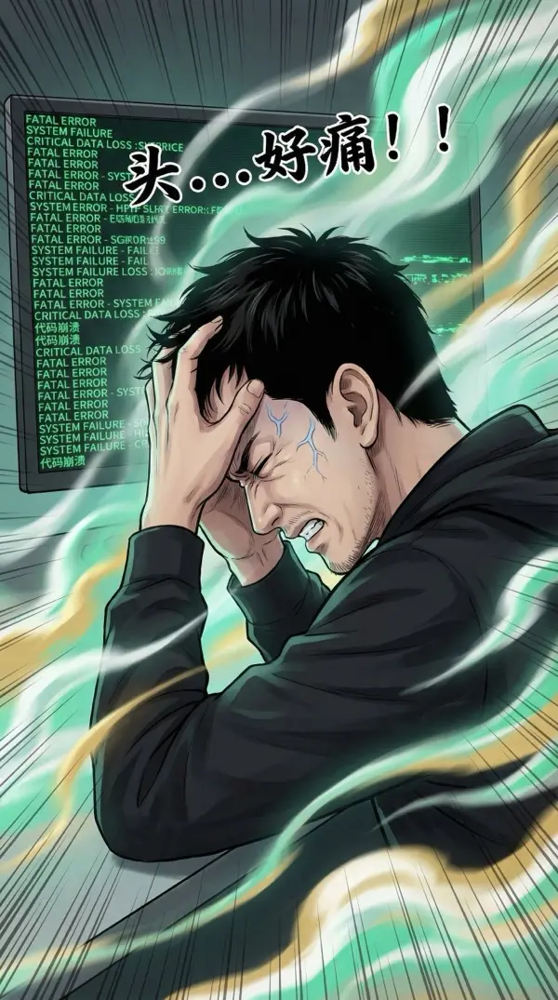
突然，一阵剧烈的头痛像电流一样从后脑勺贯穿到眼眶。我双手抱头，显示器的光开始疯狂闪烁。"头...好痛！！"不对...这不是普通的头痛...
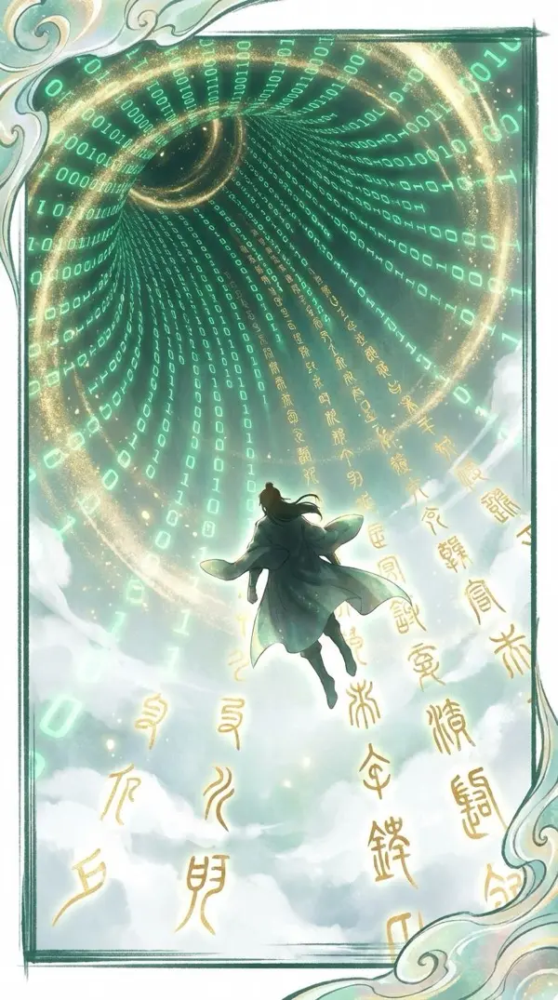
意识被撕裂。我感觉自己在坠落——周围全是绿色的代码流，像瀑布一样倾泻而下。代码在变，ASCII变成了篆书，for循环变成了卦象。这什么情况？！蓝屏了？
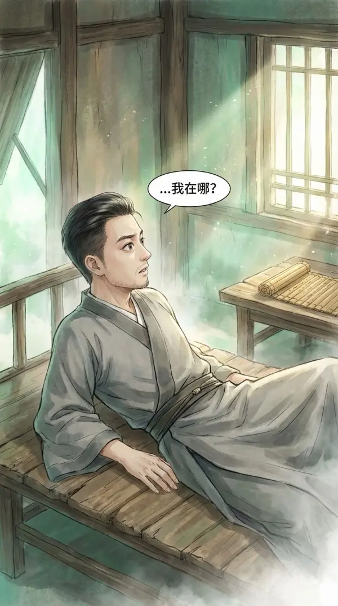
阳光刺痛了眼睛。我躺在一张硬邦邦的木板床上，身上穿着...粗布长衫？空气里有木头和草药的味道。"...我在哪？"这绝对不是公司的行军床。
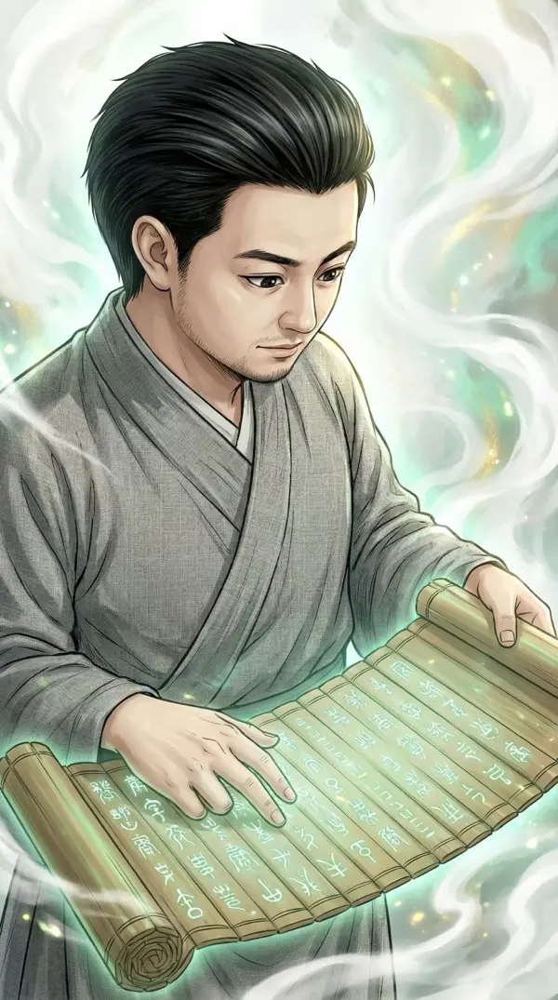
桌上有一卷展开的竹简。我凑近一看——上面刻着某种符文，排列方式像...函数定义？有参数传递，有循环结构，但全是古体字。等等...这是代码！用竹简写的代码！
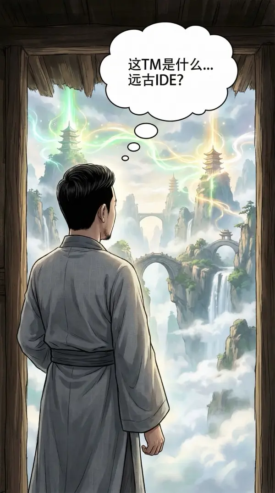
推开木门的那一刻，我的大脑宕机了。云海之上，山峰悬浮半空，石桥连接着不同的峰顶，瀑布从天际倾泻而下，远处有宫殿在云层中若隐若现。这TM是什么...远古IDE？
// SCENE_02: 天机宗
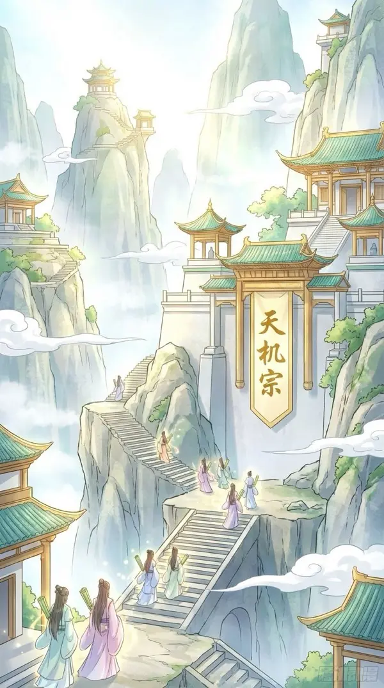
天机宗。匾额上三个金字悬浮在山门之上。整座山被改造成了一个巨大的...我只能称之为"开发基地"。每一层平台上都有穿着各色长袍的人在忙碌。
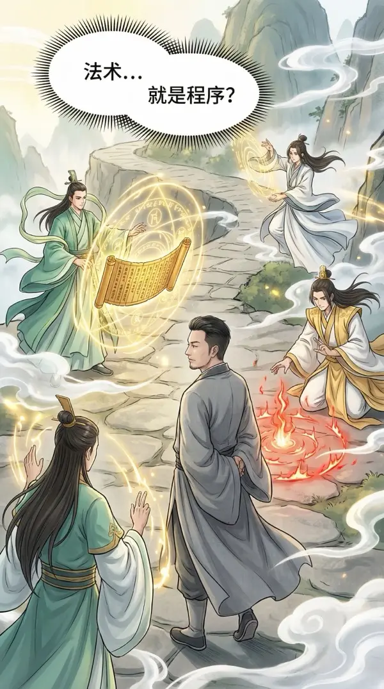
到处都是"程序员"。一个蓝袍修士展开竹简，凌空划出一个旋转的金色光阵——那是一段程序在运行。另一个红袍修士对着一团闪烁的红色光球皱眉——那哥们在debug呢。
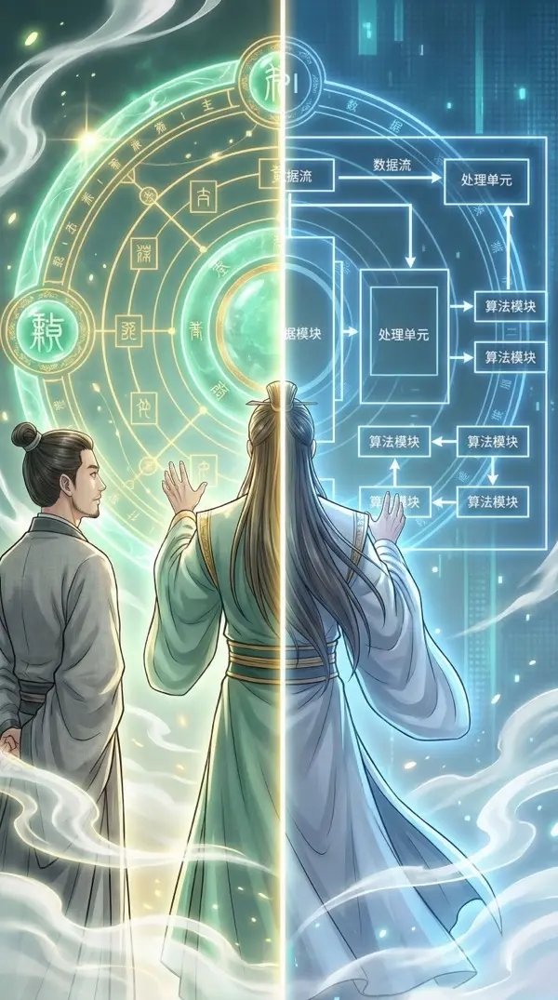
我盯着那些光阵看了五分钟，突然全懂了。灵力就是CPU算力，经脉是总线，丹田是内存，法术就是程序。这些人...在用灵力编程。而且代码质量一言难尽。
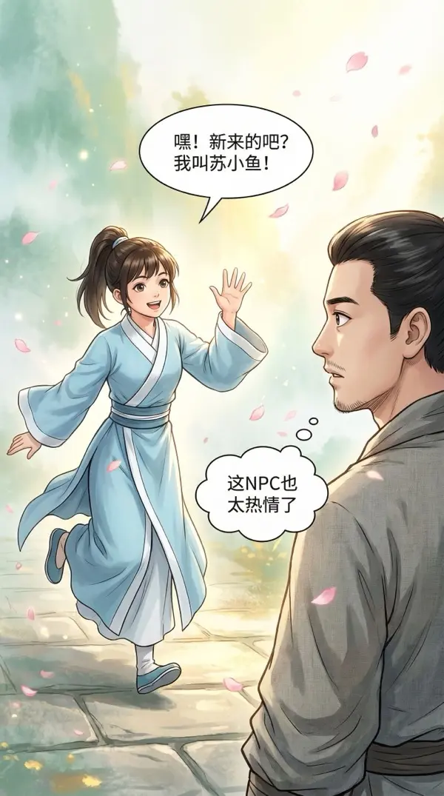
"嘿！新来的吧？我叫苏小鱼！"一个马尾辫女孩像一颗蓝色的炮弹一样冲到我面前，笑容灿烂得不像是在一个修仙宗门。这NPC也太热情了。
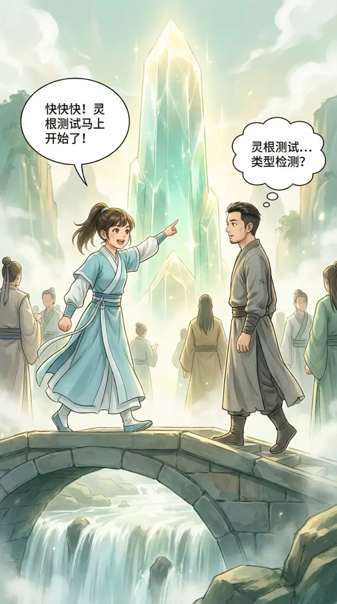
"快快快！灵根测试马上开始了！"苏小鱼拽着我的袖子就往山上跑，我被拖得踉踉跄跄。灵根测试...这是类型检测吧？typeof(朱江)会return什么？
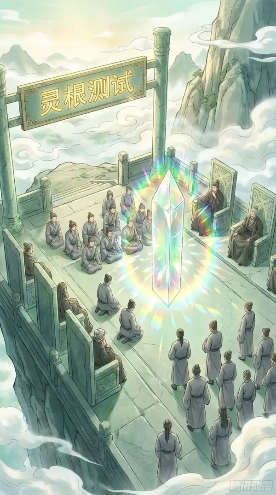
灵根测试殿。一块三米高的巨型水晶矗立在山顶平台中央，彩虹般的光芒在内部流转。数十个灰袍候选者紧张地排着队，几位长老坐在高台上俯视众人。
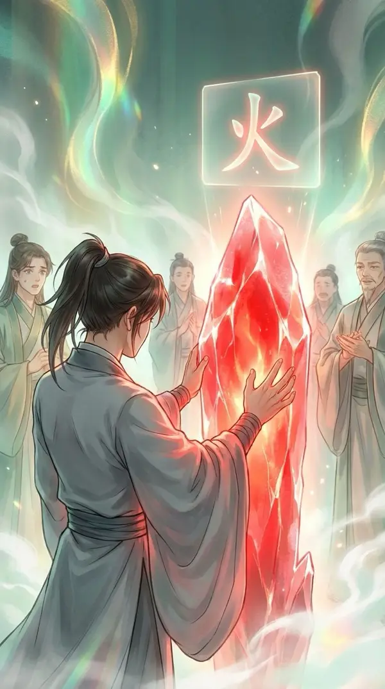
前面一个少年双手按上水晶，光芒大盛——火红色！一个巨大的"火"字凝聚在水晶上方。长老们点头认可。人群发出羡慕的惊叹。单一类型灵根，强类型语言。好比只会写Java。
// SCENE_03: typeof(朱江)
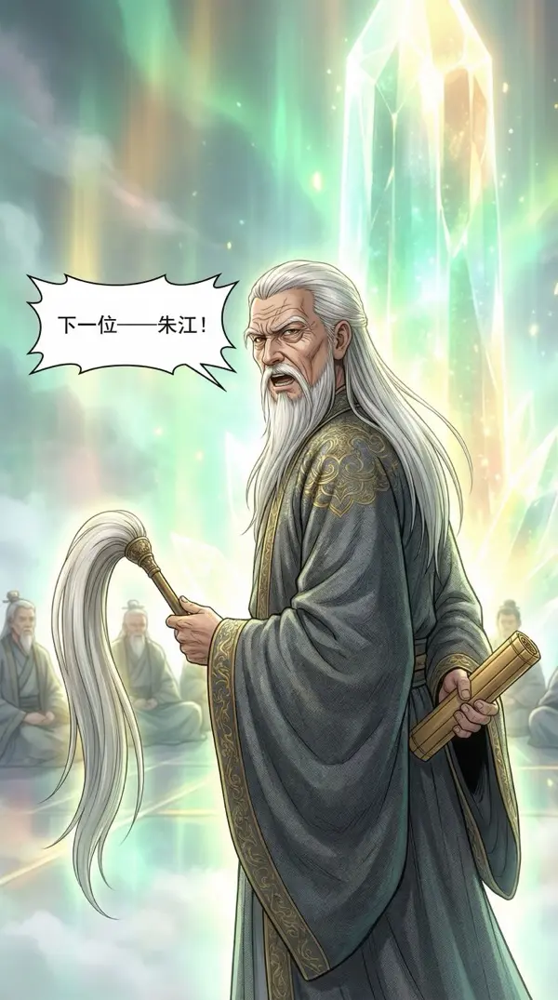
"下一位——朱江！"一个白发苍苍的老者展开名册，声音洪亮得像编译器报warning。这位一看就是VP级别的。
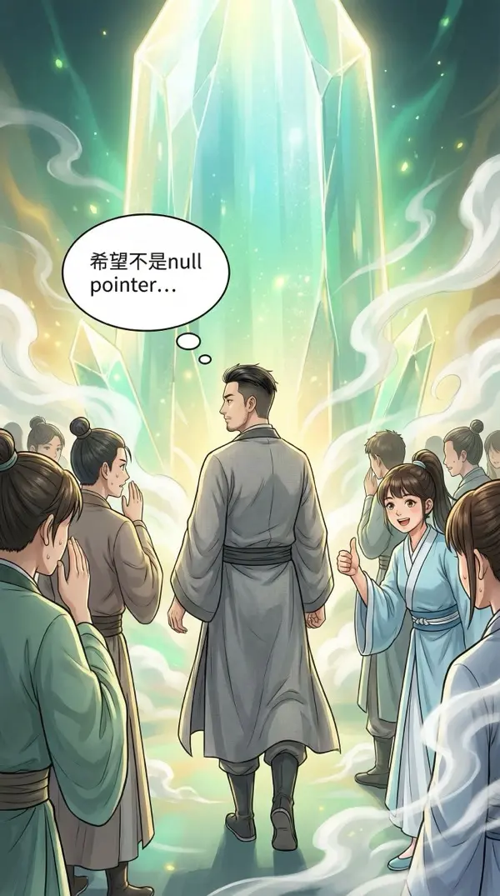
人群自动让出一条路。我走向那块巨大的水晶，心跳加速。余光瞥见苏小鱼在人群中偷偷给我比了个大拇指。希望不是null pointer...
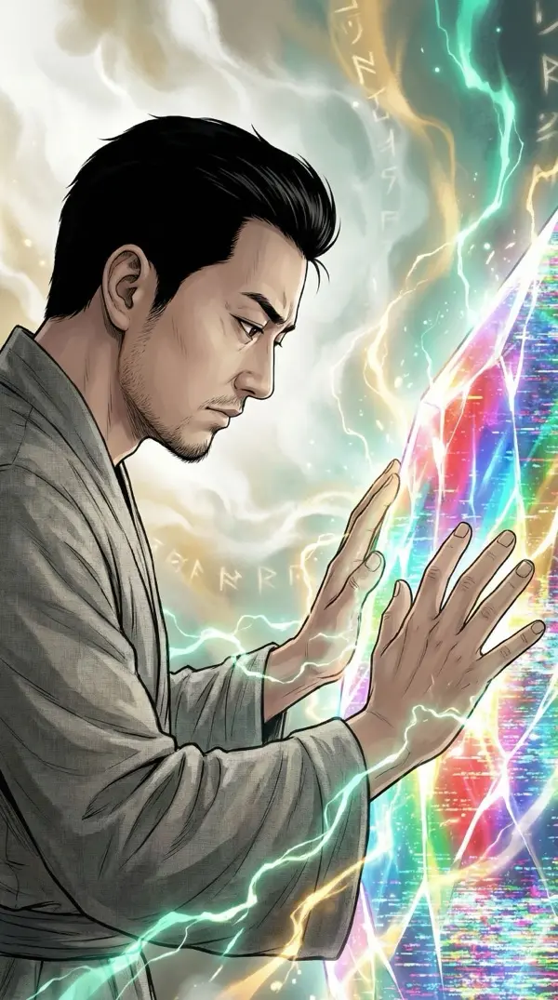
双手按上水晶的瞬间，一股电流般的感觉从掌心冲入全身。水晶开始疯狂闪烁——红、蓝、绿、金、紫，颜色切换的速度快得像跑马灯。和前面每个人干净利落的单色反应完全不同。
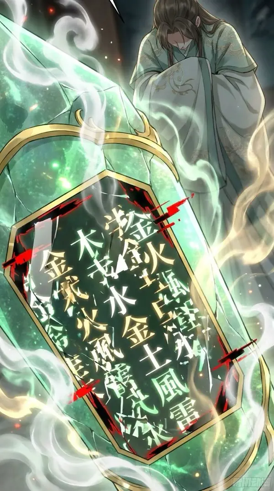
水晶表面的显示彻底乱了。金、木、水、火、土的字符碎片不停闪烁、重叠、互相抵消，最后变成一片花屏般的乱码。经典——类型推断失败，检测器崩溃了。
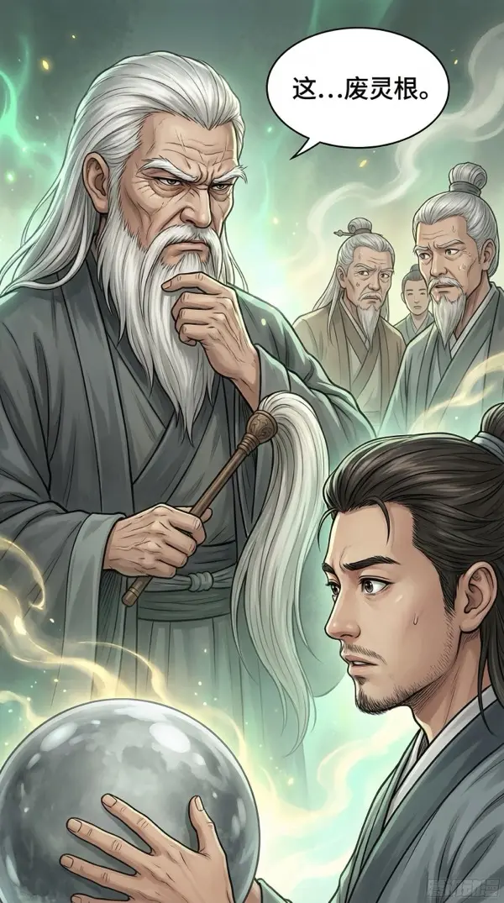
水晶黯淡下来。林长老的白眉紧锁，手捻胡须，沉声道："这...废灵根。"两个字像两块石头砸进了人群。全场寂静了一秒，然后窃窃私语声炸开。
一把折扇哗地展开。"废灵根也敢来天机宗？回去种田吧。"白衣金边的少年站在内门弟子群中，用折扇遮住嘴角的笑，姿态像极了翻PPT的产品经理。你翻扇子的动作和翻PPT一模一样，知道吗？
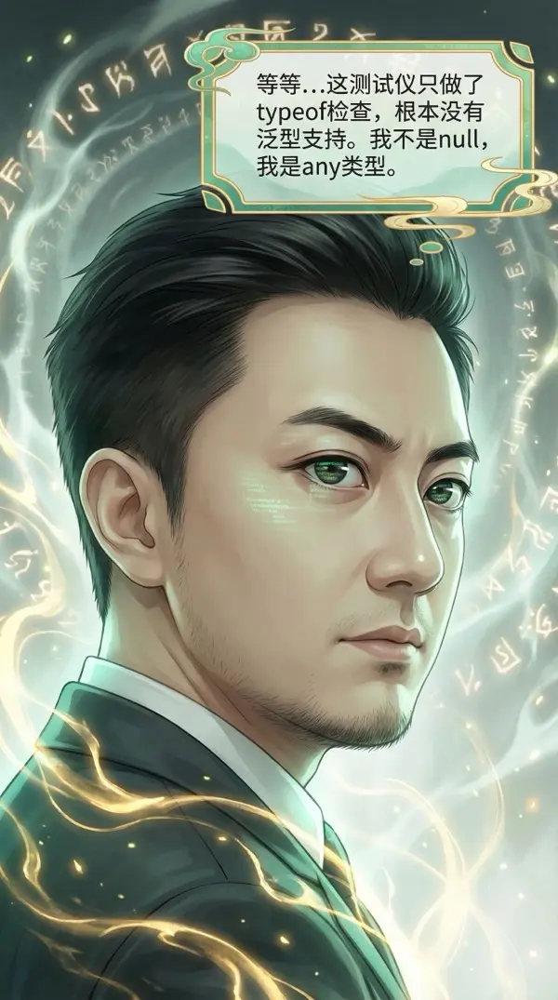
但我没有被击倒。程序员的直觉告诉我——这个测试仪有bug。它只做了typeof检查，根本不支持泛型。我不是null，我是any类型。这个世界的检测器，只认识单一语言灵根。
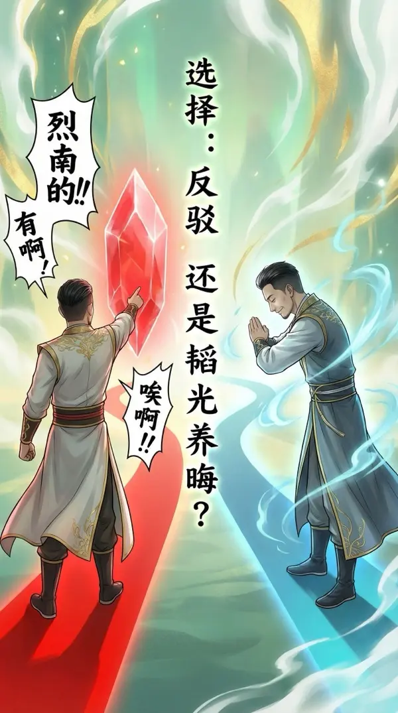
A：当场反驳，指出测试仪的bug，证明自己不是废灵根
B：默默接受"废灵根"标签，先韬光养晦
→ 我选择B
"在不了解系统架构之前，不要乱改配置。"
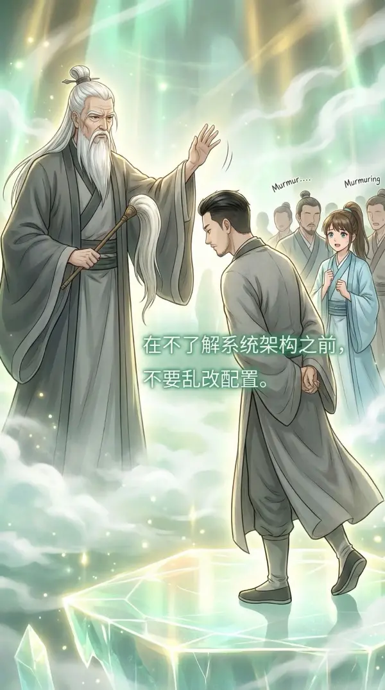
我微微欠身，神色平静地退开。苏小鱼在人群里急得脸都红了。林长老挥手示意下一个。先摸清楚这个系统的架构，再做优化。急什么？
// SCENE_04: segmentation fault
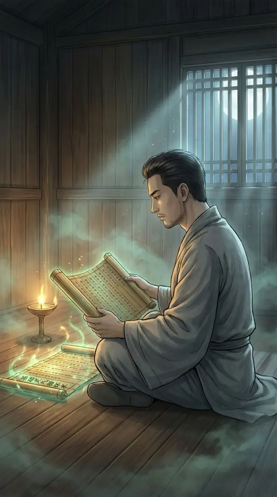
入夜。小木屋里只有一盏油灯。我盘膝坐在地上，面前展开着入门功法——《基础灵气循环术》。好，让我看看这个世界的Hello World是什么水平。
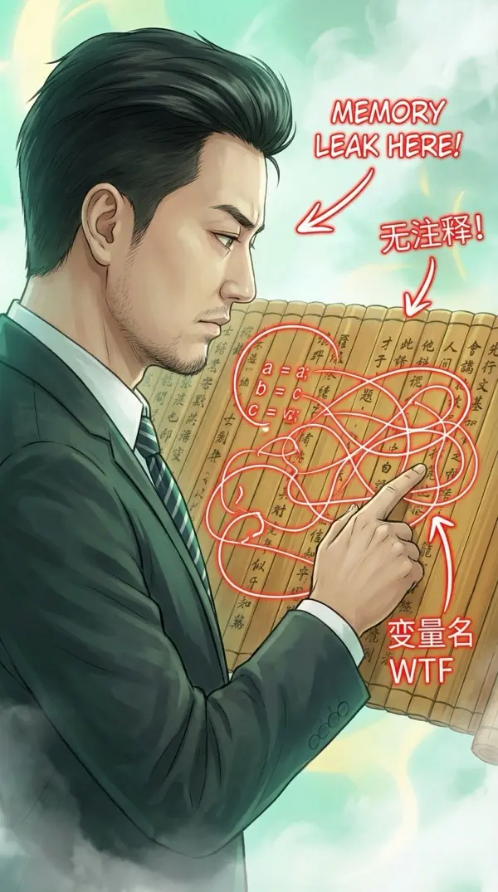
看了两分钟，我的code review本能爆发了。变量名全是abcd——谁写的？没有一行注释。这个循环有明显的内存泄漏...等等，这段逻辑根本跑不通！灵力走到第七个穴位会直接溢出！这代码，要是提PR我直接reject。
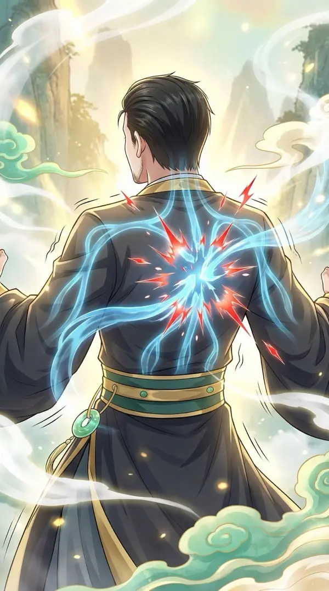
但我还是先按原版试了一下。灵力从丹田涌出，沿着经脉流动——前六个穴位还行，到第七个——"段错误！！"灵力在胸口炸开，像无数根针同时刺入。全身痉挛，眼前一黑。
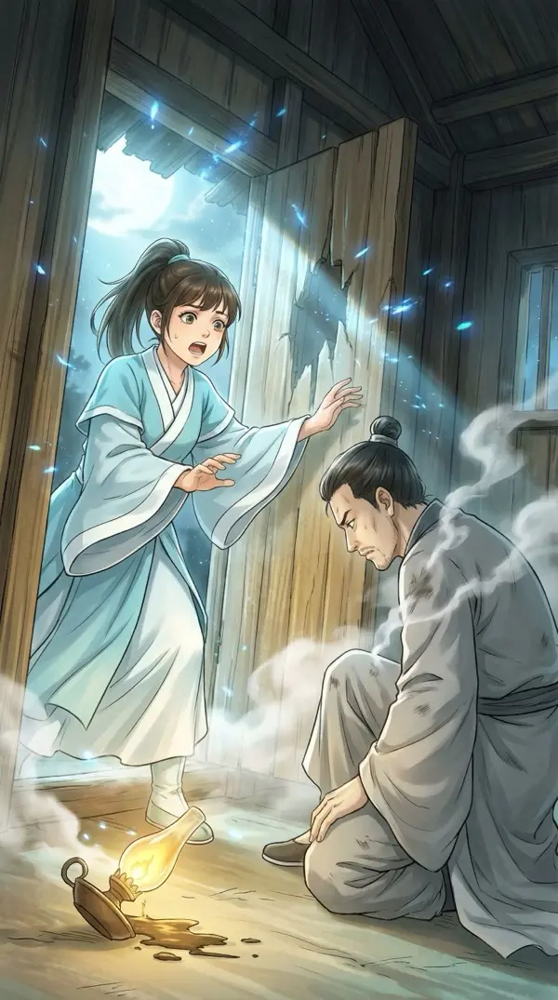
"朱江！你没事吧？！"苏小鱼破门而入，脸色惨白。我趴在地上，浑身冒烟，油灯也被震翻了。"没...没事..."走火入魔...原来就是段错误啊...访问了非法的内存地址...
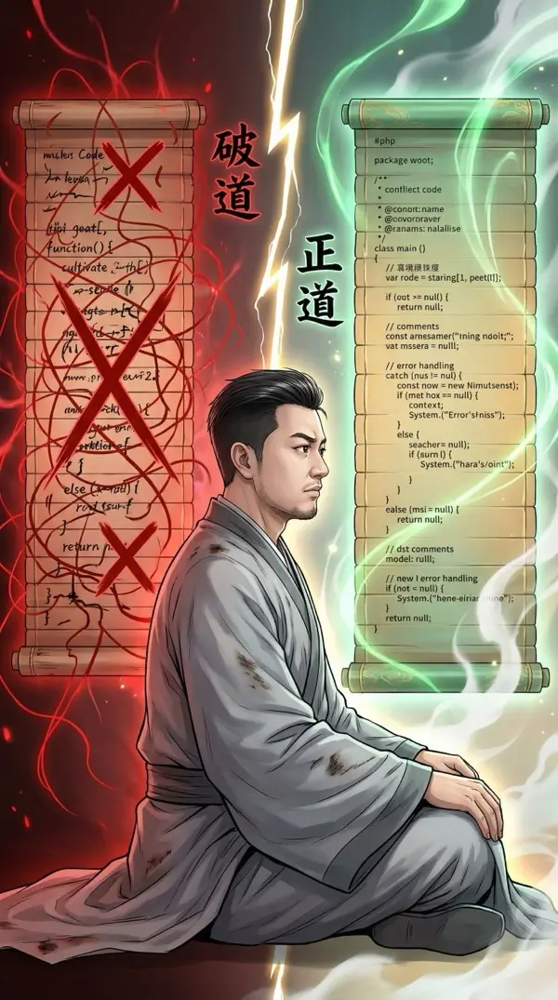
A：继续按原版功法修炼，毕竟流传千年肯定有道理
B：用CS知识重构这段"代码"，优化灵力循环路径
→ 我选择B：重构
"流传千年的代码不代表没有bug，说不定就是因为没人敢改，才一直这么烂。"
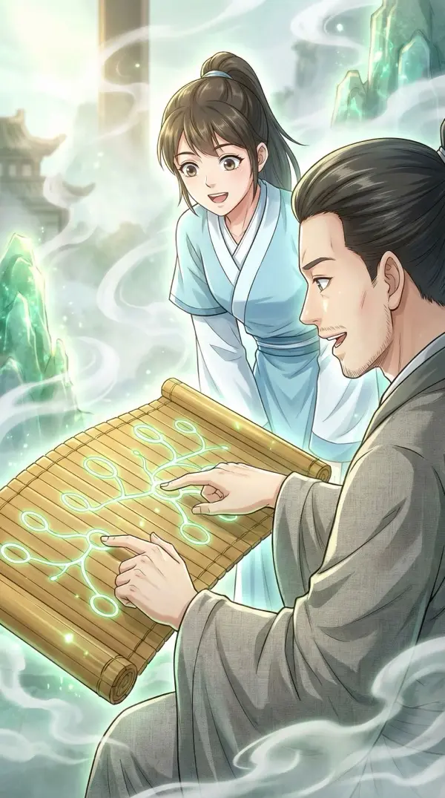
我拿起竹简，手指发着绿光在上面重新书写。加了try-catch错误处理，补上垃圾回收机制，优化灵力循环路径，消除冗余节点。变量重命名、加注释、路径优化...完美。苏小鱼在旁边看得目瞪口呆。
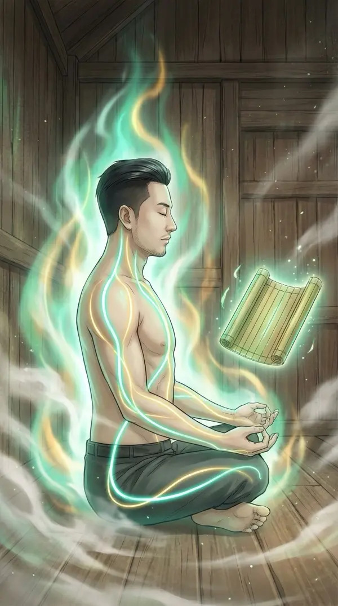
重构后的功法运行起来，完全是另一种体验。灵力在经脉中像丝绸一样顺滑流转，没有一丝浪费。青金色的光芒从体内升起，小木屋都在微微颤抖。炼气一层...二层...三层！效率提升了十倍不止！
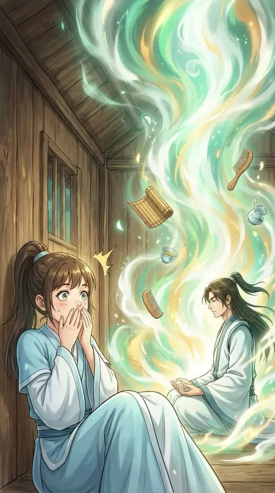
苏小鱼靠在墙上，双手捂嘴，眼睛瞪得像铜铃。茶杯、竹简、梳子...屋里的东西全漂了起来。"一...一晚上三层？！别人要三个月的！这怎么可能？！"
// SCENE_05: 异常信号
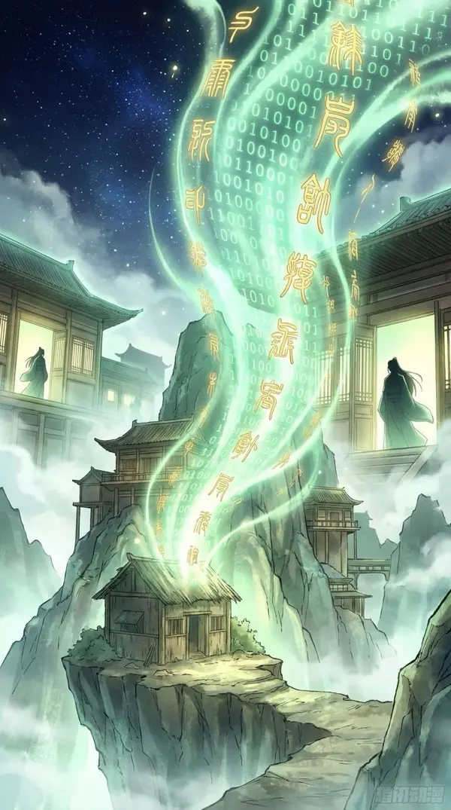
一道绿色的光柱从小木屋的屋顶冲天而起。光芒中夹杂着流动的代码字符——绿色的二进制和金色的篆书交织缠绕，在夜空中炸开成漫天的数据瀑布。外门弟子区的窗户一扇扇亮了起来。
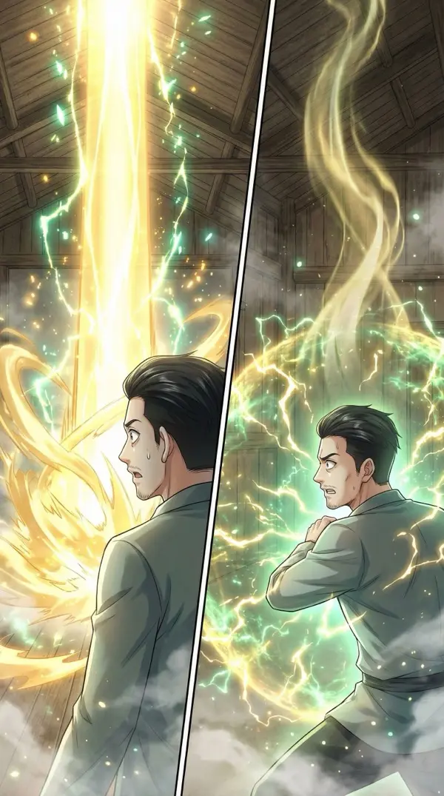
A：继续突破！第四层就在眼前，一鼓作气！
B：强行收敛，光柱太扎眼，会引来不必要的关注
→ 我选择B：紧急回滚
"生产环境不要乱发布。未经测试的代码上线，出了事谁负责？"
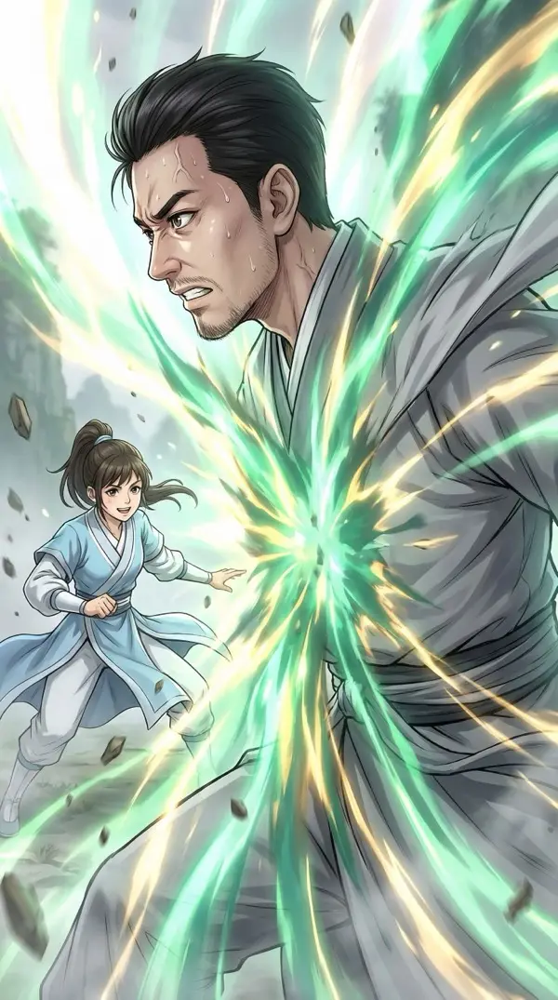
我咬紧牙关，用全身的力量压制住暴涨的灵力。太阳穴的青筋暴起，汗珠从额头滑落。绿金色的光柱迅速收缩、消散，飘浮的物品纷纷落地。"回滚...回滚...紧急回滚！"
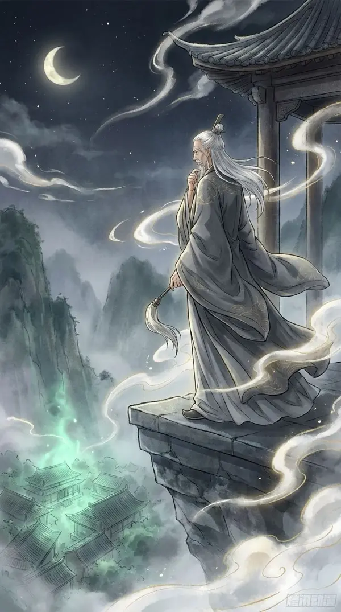
远处的山亭之上。林长老独立亭边，白袍白须在夜风中飘动。他望向外门弟子区那已经消散的绿光，眼中原本的严厉慢慢变成了深邃的思索。"废灵根...还是...？"
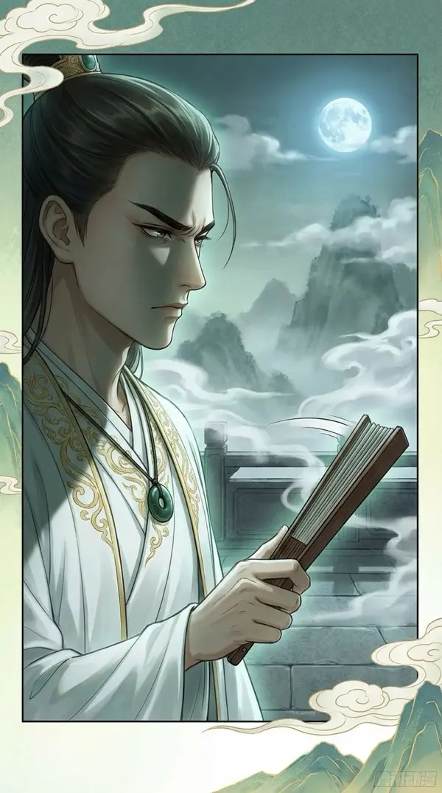
内门弟子区的月光台上。折扇"啪"地合拢。赵天赐的表情从白天的嘲讽变成了冰冷的认真。他感应到了那股异常的灵力波动。月光在他脸上投下一半阴影。"有意思..."